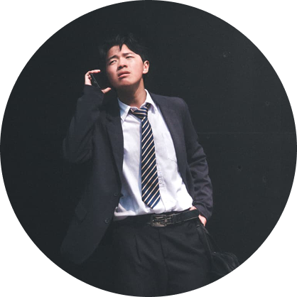
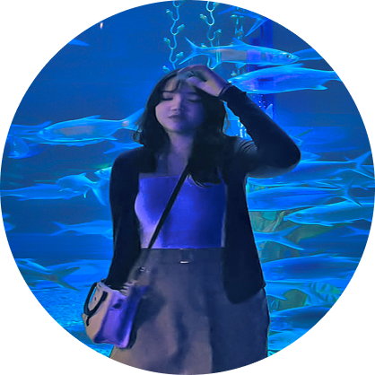

Randy Silitonga
Pemeran utama
Pemeran utama

Conceptor

UI/UX Designer
Nouvelle Vague merupakan proyek video pendek yang dikembangkan sebagai bentuk pemenuhan tugas proyek mata kuliah. Website ini dirancang sebagai media presentasi digital untuk menampilkan hasil produksi video sekaligus mendokumentasikan proses kreatif di balik pembuatannya.
Melalui website ini, kami menyajikan hasil karya dalam bentuk video berdurasi satu menit yang dilengkapi dengan elemen multimedia, deskripsi proyek, referensi, serta metadata teknis. Seluruh proses produksi dikerjakan oleh Kelompok 2, mulai dari pengembangan ide, pemeranan, hingga pengambilan gambar.
Logo Kelompok 2 — Proyek Multimedia Nouvelle Vague
Logo ini menggabungkan huruf “K” sebagai identitas Kelompok dengan bentuk segitiga tombol play sebagai simbol dari multimedia itu sendiri. Garis putih di dalamnya menggambarkan romawi 2 untuk kelompok 2
Warna biru tua memberi kesan profesional dan tegas, sedangkan warna putih menciptakan kontras agar bentuk logo tetap jelas. Secara keseluruhan, logo ini mewakili kolaborasi Kelompok 2 dalam membuat tugas video yang punya cerita dan karakter.
Melalui Nouvelle Vague, kami berharap dapat menyelesaikan proyek ini dengan baik sebagai bentuk pemenuhan tugas mata kuliah, sekaligus menerapkan seluruh elemen multimedia yang telah dipelajari.
Kami juga berharap hasil karya ini dapat menjadi pengalaman berharga dalam mengembangkan kreativitas, kerja sama tim, dan kemampuan produksi video.